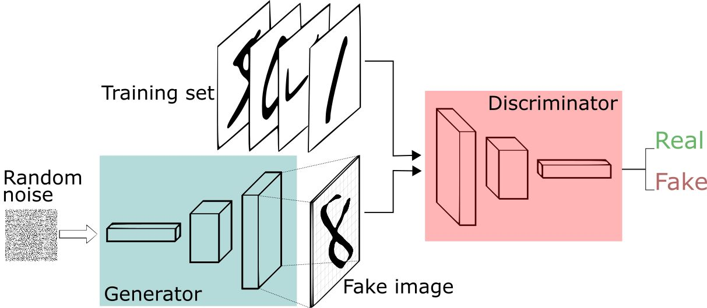
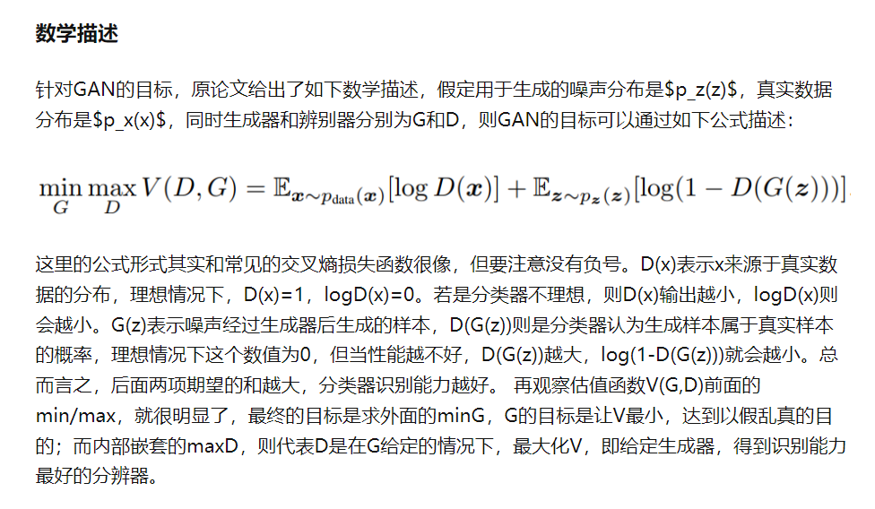

1. 本课题的目的及研究意义
21世纪以来，随着计算机科学技术的不断提高，互联网技术的日渐成熟，文化交流愈发密切，世界上各类亚文化随之应运而生。二次元便是其中之一，而现在的二次元文化已然逐渐融入了主流，成为流行文化的一员。在当今时代以人物为核心的创作方法，让动漫作品更加便于搭建人物关系和故事框架；而重于对故事元素与人物特征的组合使得故事人物的原创性逐渐丧失。现如今的动漫作品用这样的创作模式，更加偏向于商业化、模式化。对于人物的创作已然不是呕心沥血的“创新”，而是从现有的元素中去结合、进行再创作。这一点正符合GAN算法核心思想。此外，同人创作的作品也会加强这种去中心化的文化特征，通过二次创作，将其不同的符号放入不同的情景进行重组。同时，在互联网时代，网络空间中，一个人所能展现给他人最直接的事物便是他的头像和昵称，也就是一张图片和一段文字。其中信息量最大的毫无疑问是他所选择的头像图片。这一切都不断的越来越深入到我们日常的生活之中，成为我们在网络空间对外展示的最为重要的事物之一。现今，有越来越多的青年人选择动漫人物头像，他们在成长的同时，也需要在网络上突出自我，表达自我。GAN动漫头像生成就可以提供这样的一个功能，可以自己选择自己喜欢的样式，融合不一样的文化符号，最后选择自己需要的头像。同样也可以用在2D、3D游戏建模上，给人更多的灵感。同样的技术，不止步于动漫，只要是一种样式(style)，就可以创造出一个不属于这个世界的，但同时可以以假乱真的、相似、却又独一无二的另一个样式。
2. 本课题的国内外的研究现状以及发展趋势
生成式对抗性网络(Generative-Adversarial-Networks, GAN)在2014年被Ian Goodfellow等人提出，而这个概念在当时的机器学习、深度学习领域十分新颖，并且掀起了一场新的革命，它则首先被应用在图像方面。例如仅靠机器自己合成一个世界上从未出现过的、难以分辨真假的图像，这种无监督的机器学习性质让GAN功能变的十分强大。因为在当时，机器学习通常需要人工对数据进行标记或者分类，这是一项机械式的、重复性的、十分枯燥乏味的工作。而近年来，随着计算机硬件不断发展、数字图像处理技术的不断提升、GAN架构的不断优化，GAN应用程序变的越发真实。以GAN为中心，可以生成图片、生成文本、将图像的某些性质转移到另一个图像上、增强图片；以人工面孔图像为中心，他可以改变图像人物年龄、改变脸型、外观、肤色、表情、姿势、发型等等。
生成式对抗网络(Generative-Adversarial-Networks, GAN)正如其名，首先基于神经网络结构网络Networks。其次，这个网络有对抗性Adversarial，这也意味着它会对两个不同的神经网络模型进行训练。我们一般将其分别叫做生成器网络G和鉴别器网络D（或者判别器网络）。而最终通过G、D网络之间的不断优化得到的GAN可以自我生成我们所需要的实例。这些实例看起来和原有的数据分布相似，但却不完全一样。例如生成新的风景照片，其风景的一部分类似于现有的照片数据集，但在细节上仍有一些不同。G网络会学习并且生成新的看似合理的数据样本;D网络则会学着去区分G网络生成的假例子和数据中的真实例子。这两个模型相互学习训练的过程就如同对抗博弈一般。而现有的GAN模型的一般分为两种，①概率模型PBM，②能量模型EBM。但最终在训练之后，生成器G模型就可以按照我们所需要的去自行创建类似的新样本。这种技术可以更好的理解图像空间内在的本质并产生更为精确的结果。这也会使得提升了分辨率之后的图像看起来比原本的图像更加真实、其细节更为精细。
如今的生成对抗网络，以GAN为基础，已经发展出很多不一样的算法。
首先是DCGAN，它使用逆卷积层和卷积层替换了GAN的全连接网络，使得网络超参数数量大大减少，同时使用卷积学习局部信息，使得生成的图片质量大幅提升。
其次便是InfoGAN，相比于普通的GAN，InfoGAN在输入向量处加入了约束c，通过不断的学习与反馈，InfoGAN可以将图片中的一些特征学习出来，比如MNIST手写数字的粗细，倾斜度等；再比如人脸照片是否戴着眼镜等一系列特征。
再者是CycleGAN，CycleGAN正如其名，其训练过程是一个循环，有着两套判别器和生成器。因而训练时是输入两组图片，CycleGAN则可以自动将某一类图片转换成另一类图片。例如将猫的图片转换成狗，将春天的风景转换成冬天，通过简朴的线条图生成细节丰富的完整图片。
接下来便是WGAN，其全名是Wasserstein GAN。在Martin Arjovsky提出WGAN之前，GAN算法就存在着训练困难、生成器和判别器容易梯度爆炸或者梯度消失的问题。而WGAN通过使用KL散度和JS散度这两个核心衡量指标，进而引入了Wasserstein距离，通过定义Wasserstein距离的限制可以解决大部分的梯度消失问题。接着通过数学手段，将Wasserstein距离优化改写成计算机可以求解的形式并利用一个WGAN的一个超参数来限制其神经网络。通过跳帧这个参数的数值范围，就可以更容易的落到、并近似等于Wasserstein距离。并在判别器D的学习优化中，进一步逼近W距离，这样可以有效的让生成的分布数据库中的分布尽可能的靠近。通过Wasserstein距离这个核心手段，WGAN自然就解决了GAN训练不稳定的缺陷。也因此提供了一个和生成样本质量高度相关的可靠新指标。在之后的WGAN-GP中，Martin Arjovsky更是在损失函数中添加了梯度惩罚的机制，这使得我们编码WGAN算法更加简易，并再一次证实了WGAN的稳定性。
再说SAGAN，其的全程是Self-Attention GAN。从名字就可以发现它借鉴了自然语言处理NLP中的Attention机制，提出了属于GAN自己的基于自注意力的机制，SAGAN在此机制上，近一步将图片的质量进行提升，使生成的图片变的更加逼真。
在SAGAN的基础上，进而发展出了BigGAN。BGAN同样如其名，借用BigData，从大数据，大算力方面的优势，让其生成的图片效果进一步提升。同时也提升了生成图片的分辨率。
最后来说一下styleGAN，这是英伟达NVIDIA发布的一个基于GAN的开源图像生成方法。这个方法基于NVIDIA之前一个叫proGAN的项目，它们可以控制图像不同的视觉特征。例如姿势、发型、面部形状、面部特征、发型、睁眼/闭眼、眼睛头发和皮肤的配色等等。styleGAN更是有”GAN2.0”之称。
3. 本课题的研究内容、研究方法
本课题，以生成对抗网络GAN思想为基础，通过TensorFlow or PyTorch的深度学习架构，使用Python语言开发model，使用Java进行开发访问GUI控制界面方便人物头像的预览和可视化。其中的核心便是GAN，其原理和框架图如下。
GAN整个网络由两个部分构成：Generator即生成器G，以及Discriminator，判别器D。其最基础的框架如下：
通过不断迭代的训练生成器G和判别器D。从最直观上的理解来说，在不断的训练之后，判别器D的分辨能力会提高；而这同时也会迫使生成器G生成更加逼真的图片。在最理想的情况下，G生成的样本和真实样本基本一致，而D对真假的混合样本的判断是0.5，等同于随机猜想，这就代表已经收敛并且训练完成。而对该模型进一步的优化和超参数调整将在后续工作中进行。其数学描述如下：
利用网络查阅大量国内外相关资料、开源项目和文献，利用各网站的数据库资源浏览大量期刊和文献进行深入研究和分析。进入国内外各种深度学习开发者社区和论坛，进行更多交流，获取更多信息和技术。通过不断尝试互联网上现有的方案，并加入自己的理解来相互结合，在不断调整每层GAN的神经网络配置和各种超参数后，我们可以利用网络上公开的GPU计算能力进行迭代，从而获得我们自己的模型。之后，采用模块化结构独立开发各模块的功能，并将站点设置为web模式，以最大限度地减少各模块之间的耦合，并根据各功能模块的实现，构建更加灵活方便的GUI控制界面和UI访问界面。
4. 本课题的研究步骤及预期效果
2021年12月-2022年2月初 文献搜集与整理、外文翻译、准备开题报告
2022年2月初-2022年2月末 撰写开题报告
2022年2月末-2022年3月初 设计研究方案和技术路线，前期工作准备
2022年3月初-2022年3月底 进行概要设计，详细设计，确定每个模块具体设计概要,完成整体设计，软件编码工作等
2022年4月初 测试，完成毕业设计
2022年4月中 撰写毕业论文大纲
2022年4月中-2022年5月中 撰写毕业论文初稿
2022年5月中-2022年5月20日 教师审阅论文、修改论文
5. 本课题的参考论文及书目
[1] Bengio, Yoshua, Ian J. Goodfellow, and Aaron Courville. “Deep learning.” An MIT Press book. (2015).
[2] LeCun, Yann, Yoshua Bengio, and Geoffrey Hinton. “Deep learning.” Nature 521.7553 (2015): 436-444.
[3] Hinton, Geoffrey E., Simon Osindero, and Yee-Whye Teh. “A fast learning algorithm for deep belief nets.” Neural computation 18.7 (2006): 1527-1554.
[4] Hinton, Geoffrey E., and Ruslan R. Salakhutdinov. “Reducing the dimensionality of data with neural networks.” Science 313.5786 (2006): 504-507.
[5] Krizhevsky, Alex, Ilya Sutskever, and Geoffrey E. Hinton. “Imagenet classification with deep convolutional neural networks.” Advances in neural information processing systems. 2012.
[6] Simonyan, Karen, and Andrew Zisserman. “Very deep convolutional networks for large-scale image recognition.” arXiv preprint arXiv:1409.1556 (2014).
[7] Szegedy, Christian, et al. “Going deeper with convolutions.” Proceedings of the IEEE Conference on Computer Vision and Pattern Recognition. 2015.
[8] Hinton, Geoffrey E., et al. “Improving neural networks by preventing co-adaptation of feature detectors.” arXiv preprint arXiv:1207.0580 (2012).
[9] Srivastava, Nitish, et al. “Dropout: a simple way to prevent neural networks from overfitting.” Journal of Machine Learning Research 15.1 (2014): 1929-1958.
[10]Ioffe, Sergey, and Christian Szegedy. “Batch normalization: Accelerating deep network training by reducing internal covariate shift.” arXiv preprint arXiv:1502.03167 (2015).
[11] Ba, Jimmy Lei, Jamie Ryan Kiros, and Geoffrey E. Hinton. “Layer normalization.” arXiv preprint arXiv:1607.06450 (2016).
[12] Courbariaux, Matthieu, et al. “Binarized Neural Networks: Training Neural Networks with Weights and Activations Constrained to+ 1 or−1.”
[13] Jaderberg, Max, et al. “Decoupled neural interfaces using synthetic gradients.” arXiv preprint arXiv:1608.05343 (2016).
[14] Chen, Tianqi, Ian Goodfellow, and Jonathon Shlens. “Net2net: Accelerating learning via knowledge transfer.” arXiv preprint arXiv:1511.05641 (2015).
[15] Wei, Tao, et al. “Network Morphism.” arXiv preprint arXiv:1603.01670 (2016).
[16] Graves, Alex. “Generating sequences with recurrent neural networks.” arXiv preprint arXiv:1308.0850 (2013).
[17] Vaswani A, Shazeer N, Parmar N, et al. Attention is all you need [C] Advances in Neural Information Processing Systems. 2017: 5998-6008.
[18] He K, Zhang X, Ren S, et al. Deep residual learning for image recognition[C] Proceedings of the IEEE conference on computer vision and pattern recognition. 2016: 770-778.
[19] Auto-encoding variational Bayes. Kingma, Welling https://arxiv.org/pdf/1312.6114.pdf.
[20] Representation learning: a review and new perspectives. Bengio, Courville, Vincent https://arxiv.org/pdf/1206.5538.pdf.
[21] Vincent, Pascal; Larochelle, Hugo (2010). “Stacked Denoising Autoencoders: Learning Useful Representations in a Deep Network with a Local Denoising Criterion”. Journal of Machine Learning Research. 11: 3371–3408.
[22] Goodfellow, Ian; Pouget-Abadie, Jean; Mirza, Mehdi; Xu, Bing; Warde-Farley, David; Ozair, Sherjil; Courville, Aaron; Bengio, Yoshua (2014). Generative Adversarial Nets (PDF). Proceedings of the International Conference on Neural Information Processing Systems (NIPS 2014). pp. 2672–2680.